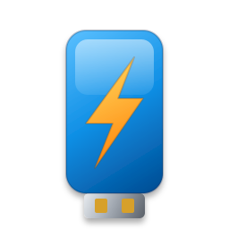
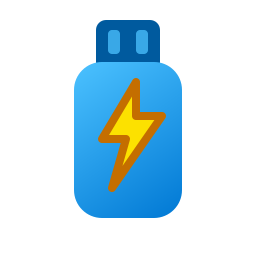
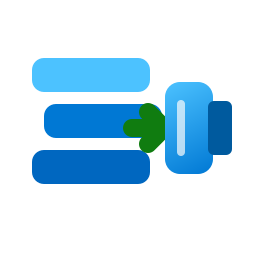
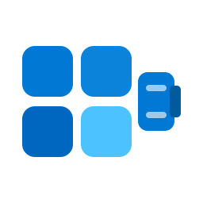
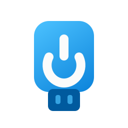
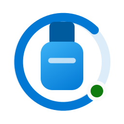
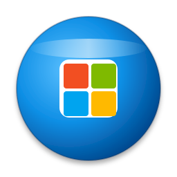
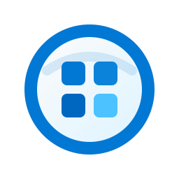
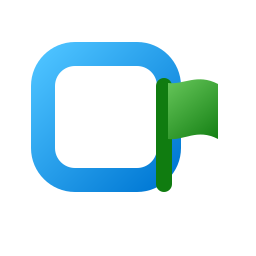

01
Disc → USB flow
Literal conversion: an ISO disc moves through a green action arrow into a USB stick.
Light surface#ECECEC

2566416
Dark surface#161616
2566416
Nine distinct SVG directions shown at 256, 64, and true 16 pixels on the app light and dark surfaces.
Literal conversion: an ISO disc moves through a green action arrow into a USB stick.

A single USB silhouette plus an orange-yellow bolt reads quickly as bootable media.

Three rounded image layers flow into a USB connector to suggest unpacking the ISO.

An abstract four-pane USB body gives the strongest Windows-install association.

The large power glyph makes the boot intent clear while staying calm and Fluent.

A rail-like progress arc frames the USB to connect the icon with the app workflow.

A pure geometric monogram favors favicon clarity over literal ISO or USB imagery.

The source artifact leads: a blue-rimmed disc contains an abstract Windows pane center.

A hollow rounded container emits a small boot flag for the simplest abstract read.
